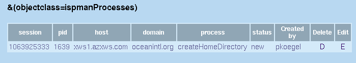

| Understanding Processes |
| ISPMan schedules system changes using processes. Processes are directed to hosts based on hostgroup membership. |
| You can view the Processes
"in the queue" by clicking on the Processes tab at the top of the screen.
 |
A process can have the status of "new" or "insession".
|
| If the user logs out before clicking "Commit session" the process
will stay in the "insession" status until it is manually deleted or manually
changed to the "new" status.
|
| Return to Administrator Guide |